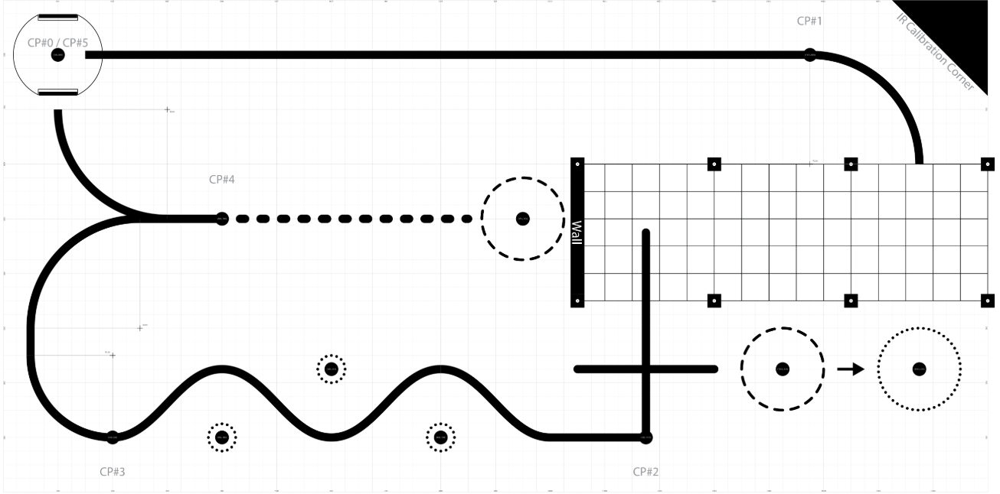
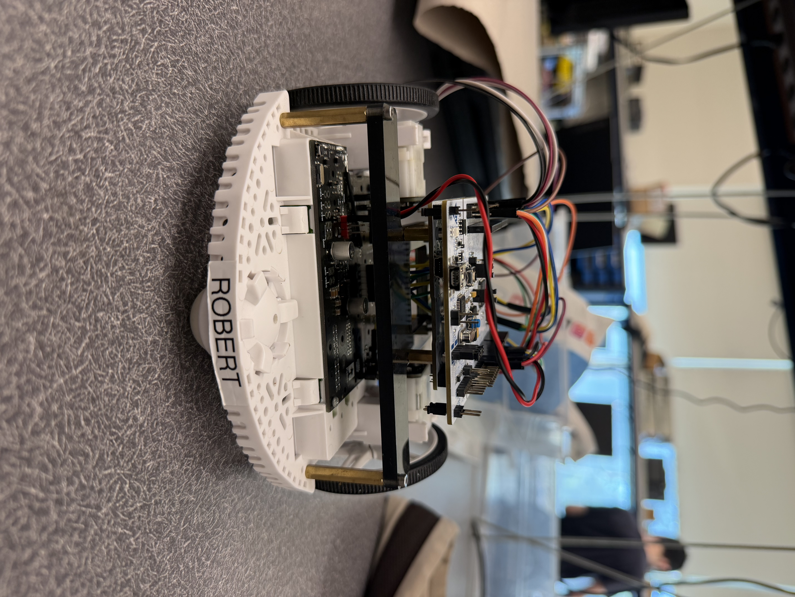

Project Overview¶
Objective¶
For our final project, our team needed to program our Romi robot, Robert, to run a designed course autonomously using line following sensors, a bump sensor and anything else integrated within our robot. A photo of the course is shown below. Our robot needed to travel in a straight line from checkpoint 0 to checkpoint 1 and complete a curve into the “garage” which is the darker grid lines of the course. Within the garage, Robert needed to avoid the structure and interact with the wall via the bump sensor. Then after exiting the garage, he could travel to move a plastic solo cup out of the first circle into the second or keep going straight to the sharp 90-degree right turn, checkpoint 2, to the curvy zig zag. Robert needed to follow the zig zag while avoiding the ping pong balls in the small circles, reach checkpoint 3 and complete the long arc to the straight line, checkpoint 4. Again, the robots could make the choice to follow the dashed line and move the second cup out of the circle or turn around and follow the arc to the ending checkpoint 5, right back at the beginning.
Course Layout¶
{kind=link}

The image above shows the full course layout that Robert was designed to navigate.
Our robot needed to travel in a straight line from checkpoint 0 to checkpoint 1 and complete a curve into the “garage,” which is the darker grid section of the course. Within the garage, Robert needed to avoid the structure and interact with the wall using the bump sensor. After exiting the garage, he could either move a plastic solo cup out of the first circle or continue straight to the sharp 90-degree right turn at checkpoint 2, leading into the curvy zig-zag section.
Robert then needed to follow the zig-zag while avoiding the ping pong balls placed within the small circles, reach checkpoint 3, and complete the long arc to the straight line at checkpoint 4. From there, the robot could either follow the dashed line to move the second cup or continue along the arc to the final checkpoint 5, returning to the starting location.
---
Final Capabilities¶
Our final robot, Robert, was able to complete the track up to checkpoint 3. Our program had Robert complete line following on the straight line from checkpoint 0 to 1, then go into a hard coded garage sequence, then back to line following checkpoint 2. We were planning on Robert to complete line following past checkpoint 4 and go for the second cup, before finishing with line following. For the second cup we did write out code that was also hard coded to use encoder counts and timing to complete. Due to time constraints, mechanical design decisions, and software setbacks, we were unable to get the line following to be reliable enough to complete the track after checkpoint 3. We did have a somewhat reliable line following and garage sequence for the beginning of the course, but the hard coded sequence in the garage made consistency harder to achieve.
---
Front View¶

The front view shows the line sensor array and bumper switches mounted at the leading edge of the robot. The sensor placement is critical for accurate line detection, and the bumper switches enable physical interaction with course elements such as the cup.
---
Side View¶

The side view highlights the layered mechanical design, including the chassis, wheel placement, and elevated electronics platform. This configuration helps maintain stability while providing sufficient clearance for sensors and wiring.
---
Rear View¶
{kind=link}

The rear view shows the motor placement and structural supports. The differential drive system allows the robot to turn by varying wheel speeds, which is essential for both line-following and maneuvering during hard-coded sequences.
---
Top View¶

The top view provides a clear look at the wiring layout and microcontroller. While compact, the wiring is organized to maintain reliable connections and allow for quick debugging and adjustments during testing.
---
Video¶
Link to your Robert Pre-Demo Trial Run video here: https://youtu.be/SJnVtiIQ5nQ
Link to your Robert Trial Run 1 video here: https://youtu.be/xZ3cLIp04qg
Link to your Robert Trial Run 2 video here: https://youtu.be/7o0A-MXgaqg
Link to your Robert Trial Run 3 video here: https://youtu.be/2p6wwLP2w_k
Summary¶
Overall, Robert is a fully integrated autonomous system that combines mechanical design, embedded electronics, and control software to successfully navigate a complex course. The design emphasizes simplicity and robustness, allowing the robot to perform consistently across multiple trials.